Your Ultimate Guide to Embracing the Chill in Japan | What to Bring, Dos and Don'ts
As the snow blankets the landscapes and cherry blossoms hibernate, it's time to prepare for a magical winter experience. Whether you're a first-time visitor or a seasoned traveler, this comprehensive guide will ensure you're well-equipped and well-informed for a memorable winter adventure.
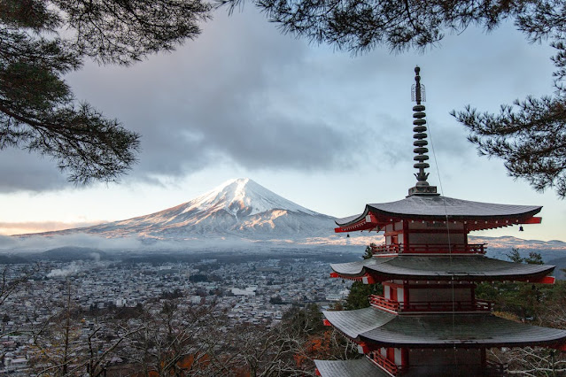What to Bring
1. Layers, Layers, Layers
Japan's winter temperatures can vary, so it's crucial to pack layers. A waterproof and windproof outer layer, thermal clothing, and moisture-wicking base layers will keep you warm and dry. I strongly advise purchasing Heattech clothing or jackets in Japan, as they are significantly more affordable compared to prices in the Philippines. Numerous Uniqlo stores offer budget-friendly options for Heattech products.
2. Quality Footwear
Don't underestimate the importance of good footwear. Waterproof boots with insulation are a must, especially if you plan on exploring snowy regions or enjoying winter sports. While in Tokyo, Kyoto, Osaka, I wear a pair of ASICS shoes as they provide much more comfort compared to boots. It's only in Sapporo, where the majority of roads are covered with snow, that I opt for my boots.
3. Tech-Savvy Accessories
Invest in touchscreen-friendly gloves so you can capture those stunning snowscapes without freezing your fingers. A portable phone charger is also handy for keeping your devices charged during cold weather.
4. Japanese Power Adapter
Don't forget to bring a power adapter compatible with Japanese outlets to keep all your devices charged and ready to document your winter adventures.
5. More Accessories for Winter
I recommend wearing a scarf or a bonnet to add extra warmth to your body, especially during rainy or snowy and windy conditions. Additionally, earmuffs are advisable to protect your ears from the cold.
Dos
1. Onsen Etiquette
Immerse yourself in Japan's rich culture by indulging in onsen (hot springs). Remember to wash and rinse thoroughly before entering the communal baths and keep your towel out of the water. Please be aware that certain traditional Japanese Onsen places do not permit guests with tattoos. It is recommended to conduct thorough research to identify Tattoo-Friendly Onsen in Japan before planning your visit.
2. Savor Seasonal Delicacies
Winter in Japan brings a variety of seasonal delights. Warm up with a bowl of hot ramen, enjoy roasted sweet potatoes from street vendors, and savor seasonal dishes like nabe (hot pot).
3. Witness Winter Illuminations
Japan is known for its breathtaking winter illuminations. Experience the magic of twinkling lights at famous landmarks like Tokyo Midtown or Nabana no Sato in Nagoya.
4. Embrace Winter Sports
If you're an adventure enthusiast, Japan offers excellent opportunities for winter sports. Try skiing or snowboarding in popular destinations like Niseko or Hakuba.
Don'ts
1. Neglecting Sun Protection
Even in winter, the sun can be harsh, especially when reflecting off the snow. Pack sunscreen, sunglasses, and lip balm with SPF to protect your skin.
2. Underestimating the Cold
Don't assume Japan's winter is mild. Be prepared for chilly temperatures, especially in northern regions. Check the weather forecast regularly and adjust your clothing accordingly.
3. Disrespecting Cultural Norms
Respect is paramount in Japanese culture. Avoid talking loudly in public places, follow onsen etiquette, and adhere to local customs to ensure a positive and culturally enriching experience.
4. Overlooking Travel Insurance
Winter weather can be unpredictable. Ensure you have comprehensive travel insurance that covers potential flight delays, cancellations, and unforeseen circumstances during your winter escapade.
By following my travel guide, you'll be ready to embrace the beauty of winter in Japan, creating memories that will last a lifetime. Get ready to bundle up, explore, and immerse yourself in the captivating winter wonders of this extraordinary destination!
A Personal Journey with Akina Boutique Resort
Bohol, a gem in the heart of the Philippines, has always held a special place in my travel adventures. Nestled in this laid-back province is Akina Boutique Resort, a hidden paradise offering budget-friendly accommodations that redefine the Bohol experience. Join me as I share the magic of my stay at this lovely resort, featuring air-conditioned rooms, breathtaking sea views, a private swimming pool, and many thrilling activities.
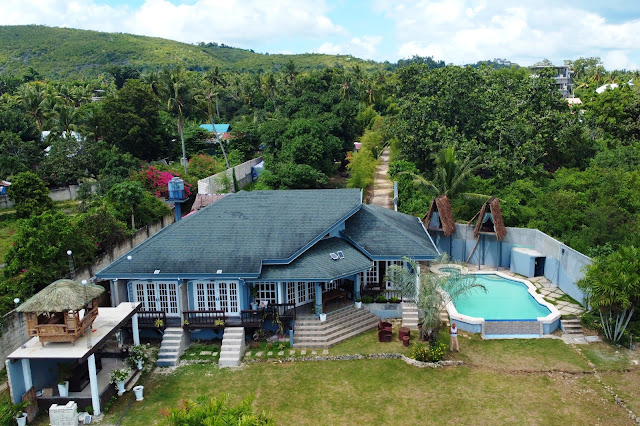Discovering Akina Boutique Resort
Akina Boutique Resort,
situated on Panglao Island, Bohol, promises an unparalleled island experience. The resort's tranquility and stunning views make it an ideal haven for travelers seeking a peaceful retreat. My stay here was nothing short of extraordinary, with the resort's peaceful ambiance and captivating surroundings leaving a lasting impression.
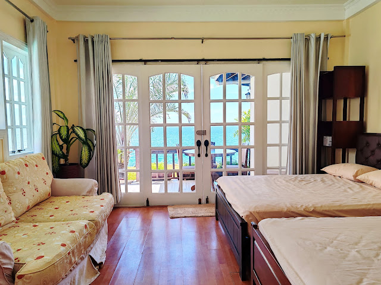 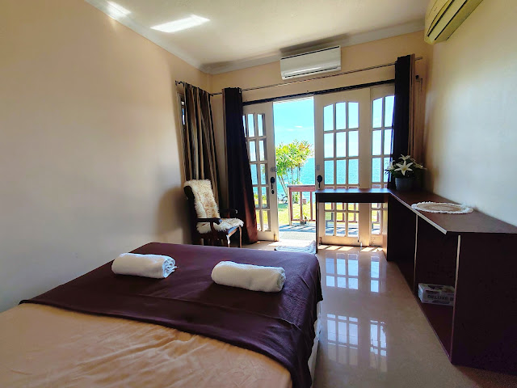 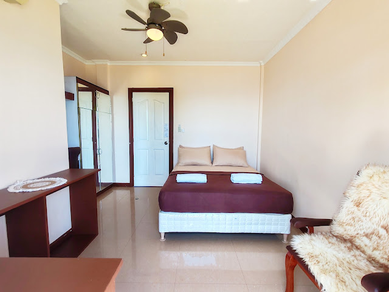Accommodation Rates
The resort's room rates cater to every traveler's needs, from cozy Deluxe Rooms to spacious Family Rooms. The rates are as follows:
Family Room with Aircon: P2950/night for two, including breakfast
Family Room with Fan Aircon: P1999/night for two, including breakfast
Additional P500 for extra guests

For those seeking a more laid-back experience, the Cabana offers a delightful retreat at P799/night for two, inclusive of breakfast.
Exceptional Staff and Guides
Beyond the tranquil ambiance of the place, what truly resonates with me about the resort is the genuine warmth and attentiveness of their staff and tour guide. Their commitment ensures that every moment is crafted for the ultimate Bohol experience, making it a stay to remember.

Relaxation by the Pool
The resort's outdoor swimming pool steals the spotlight, offering a mesmerizing panorama of the sea and clouds. Immerse yourself in its relaxing waters, where the temperature is just right, and the depth invites you to unwind with a captivating view.
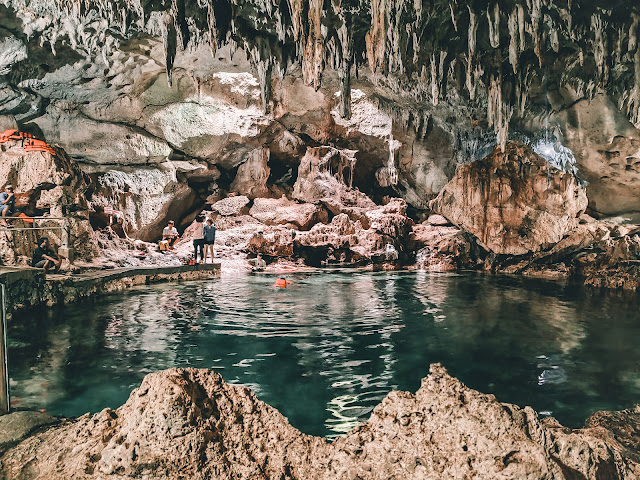 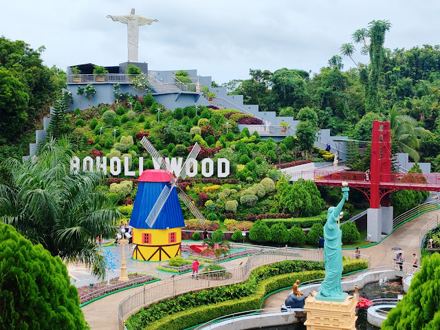
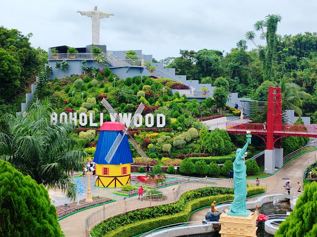
Mandarin Nest : Your Gateway to Blissful Boracay Escapes
Are you gearing up for a tropical escape to Boracay? If yes, allow me to introduce this lovely beachfront resort, the Mandarin Nest – Boracay's newest resort gem that promises not just accommodation, but an immersive experience.
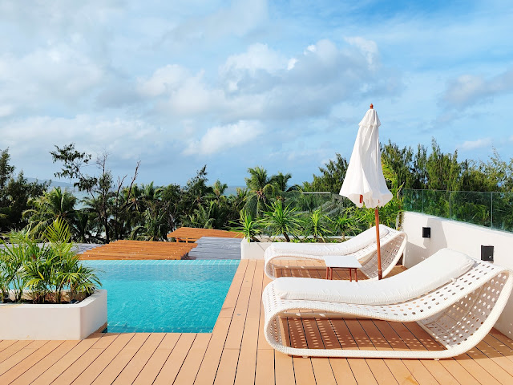Unveiling Mandarin Nest: Your Gateway to Tranquility
Nestled in the heart of Station 2, Boracay, Mandarin Nest beckons with its warm hospitality, chic ambiance, and an array of enticing offerings. From cozy rooms to a delightful restaurant, a rooftop pool with panoramic views, and a team of welcoming staff, this 4-star beachfront resort sets the stage for an unforgettable island retreat.


Your Stylish Retreat: Premier Rooms with a View
During my stay, I opted for one of their Premier Rooms, featuring a blend of comfort and style. Boasting two comfy beds, the air-conditioned room is equipped with modern conveniences, including a tea and coffee maker, a safe deposit box, a flat-screen TV, and a host of thoughtful amenities. With rates starting as low as P6534 via Agoda, Mandarin Nest offers a haven for every traveler's budget, with prices subject to seasonal changes and exclusive promotions. Book it HERE.
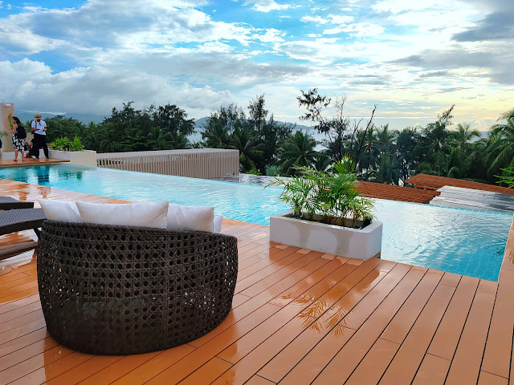
Dive into Luxury: The Rooftop Pool Experience
One of Mandarin Nest's standout features is its rooftop pool, offering a sublime panorama of white sandy beaches and towering coconut trees. The comfortably tempered water invites daytime relaxation and evening swims, making it a delightful spot for both families and solo travelers alike. Surrounded by inviting beach beds, this oasis is a picturesque retreat within the resort.
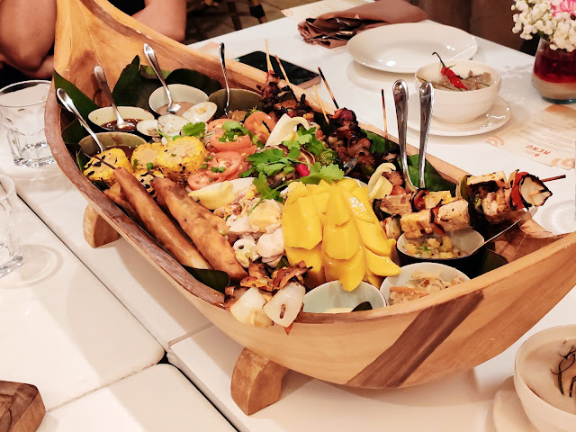 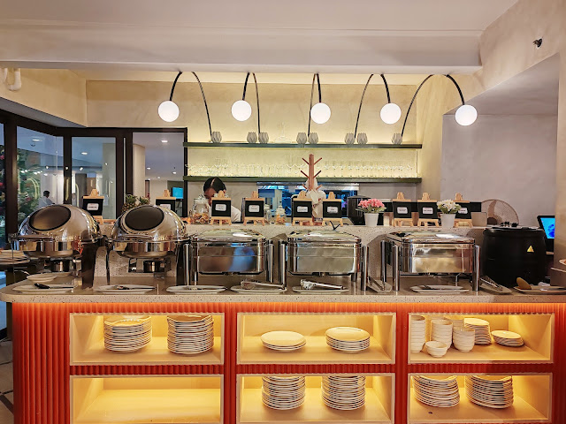
Culinary Delights with a View: Complimentary Buffet Breakfast
Kickstart your day with a complimentary buffet breakfast that comes with every room booking. From savory sausages and nourishing soups to fresh fruits and Pinoy delicacies like taho, Mandarin Nest ensures a diverse and satisfying culinary experience. As you indulge your taste buds, soak in the mesmerizing sea views, adding an extra layer of enjoyment to your morning ritual.

Heartwarming Hospitality: The Mandarin Nest Difference
Beyond the aesthetics and amenities, what truly sets Mandarin Nest apart is its exceptional customer service. The staff's friendliness and genuine hospitality create an atmosphere where every guest feels valued. Their warm approach and infectious smiles turn a stay into a cherished memory, leaving you with a desire to return.

For an unparalleled beachfront experience in Boracay, consider Mandarin Nest. Whether you seek relaxation, adventure, or a mix of both, this resort is poised to make your Boracay escapade truly unforgettable. Immerse yourself in luxury, soak up the sun, and let Mandarin Nest be the backdrop to your most cherished island memories.